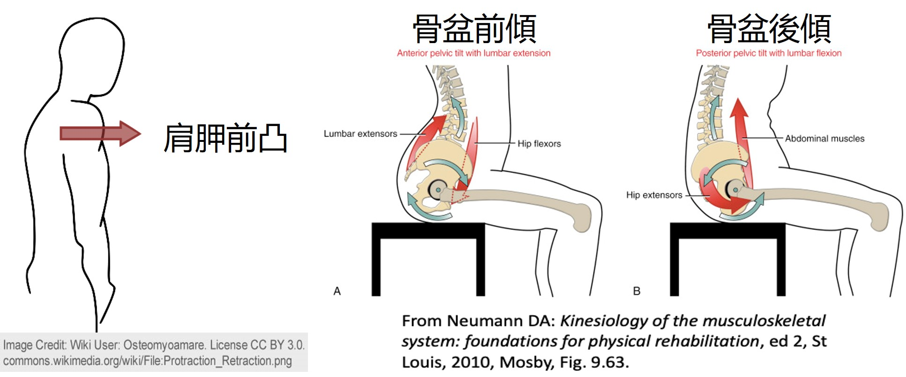

在新生兒加護病房中，我們常可以見到護理師將休息中的早產寶寶擺在不同的姿勢下，有時趴著、有時躺著，到底這些不同的姿勢對於早產寶寶有什麼用意呢？又要如何選擇合適的擺位姿勢呢？這些姿勢在出院回家後一樣適用嗎？
在新生兒加護病房中的擺位處置我們一般稱為「治療性擺位」，顧名思義，不同的擺位方式除了增加早產寶寶舒適度外，或多或少帶有一點治療性的意味在。而對於一般早產兒來說，擺位的目的除了可以讓寶寶有比較好的休息品質之外，也希望藉由擺位促進寶寶的神經行為發展、誘發良好的動作方式及型態，以及抑制不正常的肌肉張力。
正確的擺位可以促進神經行為發展、誘發良好的動作，以及抑制不正常的肌肉張力。
不管擺在什麼樣的姿勢下，以下幾點為必須遵守的原則:
1. 給予身體適當的支撐：確保軀幹及四肢不懸空，能平穩的受到支撐。有時能適當利用毛巾或擺位包巾等物品更能達到支撐的目的。
2. 模仿子宮內發展環境：試想早產兒若還在子宮內，四肢應為蜷縮的屈曲姿勢，且被子宮壁安穩的包覆著。為了達到較好的神經行為發展，擺位時應盡可能將寶寶調整成類似子宮內蜷縮的姿勢，並在四周以毛巾等物品做為圍巢，提供類似子宮的包覆感及邊界感。
3. 維持生理性屈曲：如同第2點所述，寶寶在子宮內多為屈曲姿勢，因此在擺位時應盡量協助維持寶寶的生理性屈曲姿勢。包括肩關節、髖關節及膝關節都應維持屈曲，此外應讓肩胛骨保持前凸，骨盆保持後傾。

4. 不同姿勢輪流，不應該長時間維持在同一個姿勢下。
適當的擺位可以讓早產寶寶有較佳的關節排列以及對稱性，同時支持神經肌肉的發展、促進自我安撫及行為調節，此外，若善用包巾等輔助物品，還可增加寶寶中線動作。至於很多家長在意的頭型問題，也可以藉由不同姿勢輪流替換而改善。
不同擺位姿勢的好處
1. 趴姿：體重還小，住在保溫箱裡的寶寶很常被放在趴姿。這是因為有科學證據顯示，對於有呼吸窘迫的新生兒來說，趴姿比起仰臥姿更具有增加血氧濃度、降低缺氧次數、減少肺部阻力以及增進胸腹協同動作等好處。此外，以物理治療師的角度來看，趴姿下由於更有利於四肢屈曲姿勢，因此對於早產兒的神經行為發展也有一定的助益。值得注意的是，雖然趴姿有這麼多的好處，但趴姿也被認為是嬰兒猝死症的重要危險因子，因此，除非是在醫院有生理監測器的環境下，否則絕對不建議在家的孩子採趴姿睡眠!！！（臨床上聽到很多家長會為了頭型漂亮而讓小孩趴著睡，對我來說這就是拿命來換美麗啊……可是並沒有證據證實趴著睡小孩的頭型就會比較圓…… ）
2. 仰臥姿：對於生理狀態相對穩定的寶寶來說，仰臥姿可以讓寶寶在清醒的時候接受更多外界的刺激，也有利於寶寶與照顧者之間的互動。另外，在仰躺姿勢下的寶寶也有更多機會可以練習肢體的控制。
3. 側躺姿：由於左側躺被證實可以降低下食道括約肌的放鬆，讓胃部食物不容易逆流回食道，因此是對於有胃食道逆流的寶寶，很常使用的擺位姿勢。以動作發展角度而言，側躺可以減少四肢活動時地心引力的影響，因此對於寶寶發展出中線活動或自主動作有正向的幫助。此外，對於部分有斜頸問題的新生兒，也可以藉由側躺擺位搭配主動動作誘發等方式來矯正斜頸。
不同的擺位方式對於不同月齡大小的新生兒有著不一樣的效果，建議注重寶寶發展的家長們，也可以就寶寶的發展狀態與治療師討論適合的擺位方式與時機，讓寶寶無時無刻都能獲得發展的好機會！

Share this post
Twitter
Facebook
Email